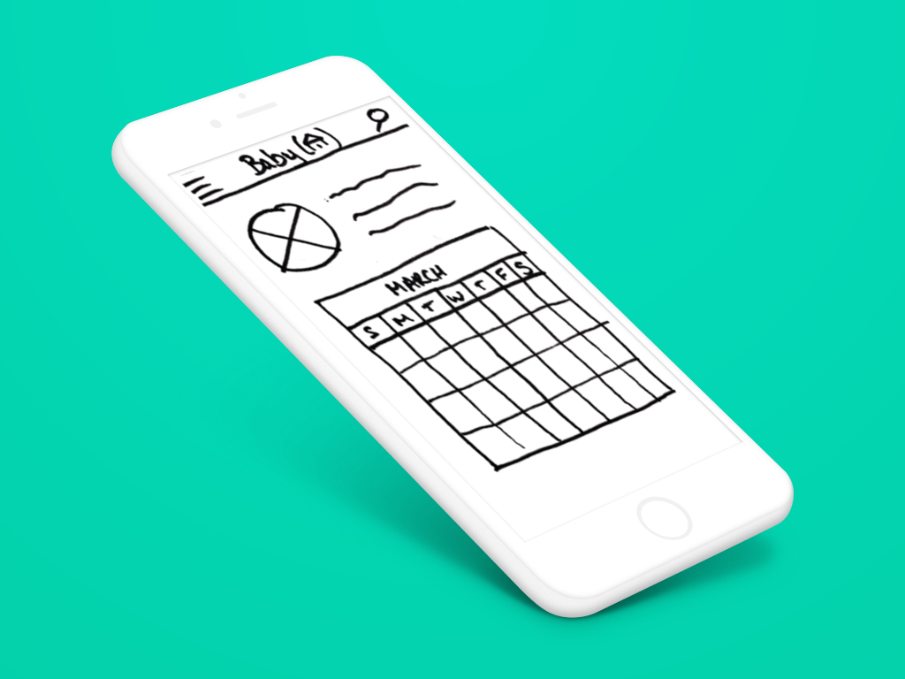
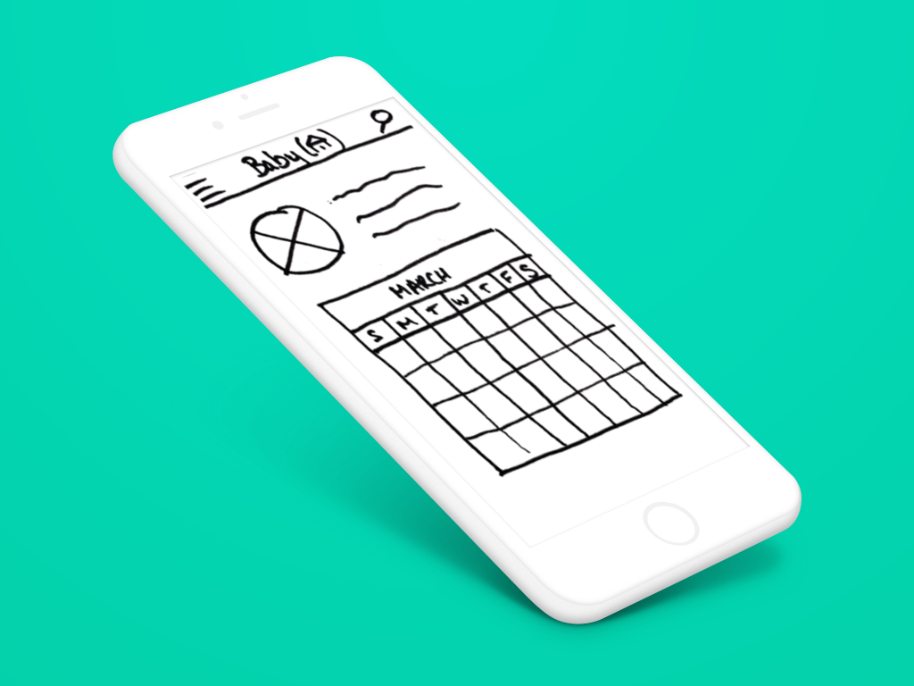

-
Olio
The Brief
OLIO is a free mobile app with the mission to reduce waste by creating a community where people share surplus food and other unwanted items.
We were tasked with creating a positive onboarding experience that encourages users to add and request items, and to increase the sense of community by showing other users near you and their activity.
The Research
Competitive
Although OLIO has no direct competition in regards to its food sharing platform, now that it has moved into the general sharing industry that has changed.
In completing a competitive analysis we gained some valuable insight into best practices. The competitors we analysed all had one or more of the following:
- Streamlined onboarding process
- Use of graphics
- Search functionality
- Ability to access as a guest
User Insights
We compiled a screener survey in order to find non-OLIO users to interview, as well as getting in touch with a number of current/past OLIO users.
What we discovered from the non-OLIO user interviews was that the onboarding process was not where they struggled. Except for a slight confusion as to whether the app was solely to trade fruit, due to the images in the background of the onboarding.
The real confusion and lack of engagement actually started once they had signed up and were on the app itself.
One of the biggest issues was the naming of the section ‘Just Shared’. All our users during testing had selected this when they wanted to find items to pick up however the actual meaning behind this was that these items had just been shared with another user and were therefore unavailable.
“Where can I find things that have just been added?”
This was driving new users away from the app as they believed that there weren’t any items available. In order to keep new users engaged we advised OLIO to change the naming of this page and minimise confusion. They renamed it to ‘Just Gone’ as they still wanted to demonstrate how many items were being shared overall.
After speaking to current OLIO users we gained some valuable insight into the current pain points of the app as well as the reasons why they kept returning:
Pros
- Loved feeling part of the community
- Meeting new people
- Reducing waste
Cons
- Challenging to add bulk items
- Confusion with the donation function
- Inability to save preferences
From our research we discovered that the biggest pain point for users was actually adding a listing. As this is one of the most important parts of app we believed the brief had to change.
Ideation
With our research completed we presented our findings back to members of the OLIO team. After agreeing to the new brief, which was to update the ‘Add Listing’ page and streamline the onboarding process, we held a design studio focused on this main listing screen.
Some of the most popular features were:
- Big images and the ability to edit them
- Saving past items and addresses
- One page to ‘Add Listing’ instead of having to scroll
- Tabbed page — so users could switch between food and non-food items.
It was these features we focused on when creating our first sketches.
Iteration
As OLIO has recently decided to add new categories to their app we needed to design a way for users to select these before going to the ‘Add Listing’ page.
Through testing various layouts we found that squares with graphics was the easiest way for users to understand what they needed to select.
As we had discussed in the design studio session we tried to add a tab to the top of the ‘Add Listing’ page. This ended up being harder to understand so we settled on button selectors which our users found more appealing.
The ability to save preferences was important to the users we interviewed so we created a calendar and address pop-up so that they could easily select options they had used before and easily choose available dates.
Having big images was important to our clients so we made the camera a large feature of the page and the first thing you see. We also gave users the ability to rearrange the order of their images by dragging and dropping them.
Although we had discussed the ability to edit images and add filters at our design studio session when we tested it with users they were not keen on the idea. This was because if you’re collecting food items you need to know what it really looks like otherwise it may be rotten, or not what they thought, when they go to collect it.
We also added a tutorial function using the friendly carrot that was already a feature of the app. Here we directed users as to how to use the search navigation and where to go to add a new listing. We found that during our testing many of the new users struggled with figuring this out.
Next Steps
Looking forward to what we would tackle should we have more time is:
- Redesign of the information architecture
- Focus on building the community
- Redesign of the homepage
- Work on the donation feature — many users found this a confusing idea for a sharing app
To see the full Invision prototype please go to the following link: Invision Prototype
-
Designing for the Victoria and Albert Museum
For our third project brief we were split into teams of 3 or 4 and given one of 6 briefs. Our team of 4 was given a brief for the V&A and were tasked with creating either a responsive website (mobile first approach) OR native application (smartphone or tablet).
Our Brief
The V&A wanted to make visiting the museum much easier and engaging, and allow visitors to find exhibits that would most interest them, and be able to keep track of the most interesting information, displays, or exhibits that they discover on their trip to the museum. They would like to feature new exhibits and tips to visitors on what they should explore based on the visitors profile.
We were given a few things to consider:
- What do people value related to viewing and learning from art exhibitions?
- How do people engage with museums and exhibitions, individually and as a social experience
- What would make a person feel engaged with the process of visiting the museum, learning from exhibitions, and enjoying the experience?
And certain features to include:
- An interactive mobile map of the museum with the ability to mark exhibits/areas they would like to visit
- A personal “passport” or interactive scavenger hunt to encourage discovery within the museum
- Feature that allows the user to learn more information about the topic of a certain exhibit or display that they come across
- Tie-in with their website to save visits or plan future visits
Our Research
We started our process off with a competitive analysis looking at both direct and indirect competitors. The direct competitors we looked at were:
- Somerset House
- Tate Modern
- Design Museum
- National Gallery
The indirect competitors were:
- London Dungeon
- Buckingham Palace
- London Zoo
Through our research we found that they all did similar things and did them well. The one thing that was really lacking however was an interactive map. This was an important feature of the brief so it was good to know that there was a gap in the market for the V&A to create a really useful interactive map.
We also did a site visit to the V&A to get a feel for what they had to offer their visitors, as well as interview them to understand their pain points and how we could help them with our app/website.
Some of the comments that we received from the users we interviewed were as follows:
From these findings we saw that there was definitely a gap in the market for the V&A to help it’s users find their way around such a vast and old building.
User Research
After looking at the V&A and it’s competitors we looked at our users. We started by sending out a screener survey to get some context as to who our users actually are and this is what we found:
After completing more in depth user interviews we found that what the V&A users wanted was:
In order to explore these ideas further, as a group, we used the common information found to create a persona.
Meet Vanessa
The scenario we created for Vanessa was:
She is planning a hen-do for a friend on the third weekend in June. She looks for interesting events in Time Out.
She finds an exhibition at the V&A: Pink Floyd….
From the information we gathered we also created an affinity map where we were able to group together all the important points from the multiple interviews conducted to get an in-depth overview.
From the affinity map above we could see that the three top areas to look at were:
- Social experience
- Engagement
- Navigation
Bringing all these findings together we moved onto the next phase of our design process… The ideation phase.
Idea Generation
As we knew from both the brief and our user findings the most important issue to tackle was navigation around the museum. So this is what we focused on in our design studio session.
Design Studio
We all started by sketching some ideas on how we thought the final product could look and what we personally felt was the best way to tackle it.
Here are some of the ideas that came out of it.
The most popular idea from the design studio was this idea of an I’m lost button. We built on this idea as well as the other 4 most popular ideas into a paper prototype, as you can see from the wireflows below.
User Testing
After creating a paper prototype we took it out to the Design Museum and the Tate Modern to do some guerilla testing with potential users.
Feedback
Here are some of the features we iterated on:
-
I’m Lost
As you can see from the below image there were a few things we needed to change with our ‘I’m Lost’ feature. The first thing we were told by our users was that the wording ‘I’m Lost’ was too negative. Another user asked us “can you really be lost at a museum?”. This was a really important point when looking back at our persona, Vanessa, as she is someone who enjoys getting “lost” at a museum.
This led us to change the name from ‘I’m Lost’ to ‘Guide Me’. After testing this again we found that users still struggled with understanding what the name meant. From this feedback we realised that the best thing to do really was to keep it simple. This is how we ended up with our ‘Maps’ section.
-
App Navigation
While changing the ‘I’m Lost’ function we also looked at how our users would navigate around the app. At first we played with the idea of just having the one ‘I’m Lost’ button which would always be visible on the page, as well as a home, back and search button. We realised after multiple tests that our users needed to access more of the functionality of the app so we created a bottom tab bar.
On our mid-fidelity prototype (above, left) users still struggled to find the ‘Guide Me’ button, which was both due to the language and the way it looked. However, they did really like to have a bottom navigation bar and found that easy to use to find other options, like ‘Home’ and ‘Tickets’. In order to improve this our high-fidelity prototype we used a different colour to highlight the selected tab as well as having the maps symbol overhang the tab bar, making it easier to spot.
-
Separate maps
Another aspect of app which we had to change based on user feedback was having separate maps for the overall museum and for individual exhibitions. Users were asking why they couldn’t just be one map which they could pinch zoom in and out on to get to different rooms and exhibitions. We listened and came up with the following:
-
Progress checker
One of the ideas that came out of our user interviews was this idea of being able to know where you’d been in an exhibition, especially when they were really busy. This was tackled in our design studio with an Ikea style progress idea.
We built on this idea as is shown above by creating an overview with ticks to show where you’d already been. Thankfully this was obvious to all our users when we tested and it received a very positive response with regards to it’s helpfulness and usability. One user even said it might be too patronising to have a tip, which is why we removed it on our high-fidelity prototype (above, right). The only thing that was missing in our original paper prototype was the ability to see where you had been which you can see was added for both the mid and high-fidelity prototypes.
You can also see once again how the main map and exhibition specific map have been combined above. Showing users in the high-fidelity protoype that they are currently ‘zoomed in’ to the Pink Floyd map.
-
Meeting point
Our final iteration was based around the idea of the meeting point.
As you can see from the image above our original meeting point feature was part of a linear user journey which we created for our main persona, Vanessa. This option confused a lot of our users when we tested it as they couldn’t see the point in setting one. When they were told it was for a bigger group of people they could see it’s worth but didn’t know why they could only set it at one point. This is why it was added as a button to the main ‘Maps’ screen.
On our mid-fidelity iteration people found it much easier to use and liked the idea that a text was sent to their friends that didn’t have the app.
Next Steps
Now that we have created a high-fidelity prototype we would like to be able to continue testing with users and with their feedback continuing to iterate on our designs.
As well as the continued testing we have a few next steps that we would like to continue to build on:
- Better integration with mobile website
- Exhibit Journal (to document interesting exhibits)
- Integrating with a social community (see what others like/visited)
- Bringing in the online shop
If you would like to test our current prototype you can find it here: https://projects.invisionapp.com/share/GNBG3VL7U#/screens/230634107
-
E-commerce in 8 days
A brief section on the brief
For our second project we were tasked with designing an e-commerce website for Growing Garden Supply (GGS), a fictional garden store based on Columbia Road. The scope of the project was:
“Through a new ecommerce website, we want to showcase our products, while maintaining our brand image. At the same time, we want to maintain our ‘small shop’ appeal and great customer service. Unlike e-commerce retailers such as Amazon, we offer a highly-curated inventory, focusing on hand-picked quality over quantity.” Some prioritisation work had already been done with the client and we were given 3 personas to work with.
Our 3 personas Let’s check out the competition When analysing the data above we found big corporations to be lacking on the community side of things, which is very important for our client. They are also much more restrictive when it came to how customers pay for their items. Neither of the direct local competitors had an e-commerce presence. Their websites were focused on bringing users in to the ‘brick and mortar’ shops. The indirect competition, being smaller shops, didn’t have an option to ‘click and collect’ or make it easy for people to find the popular brands. However, both shops made it easier for their customers to use various payment methods. These are the areas I will be focusing on and improving upon when developing GGS’s e-commerce site. Homebase seed organisation Homebase flowers In addition to the online competitive analysis we also went to visit a few of the direct competitors shops to see how they organised products and the how the shop would feel to a customer. On my visit to Homebase it was clear that all their stock is laid out in an easy to find and logical way. However, it was big and unfriendly, and the staff lacked expert knowledge. Seeing how one of the very large online competitors was lacking in actual face-to-face customer service helped me to see the niche that GGS could fill. Time to find the sweet spot After conducting the competitive analysis we moved on to looking more specifically at what makes GGS unique. Who are Growing Garden Supply? From the concept map above I found that they really valued their heritage, having been Tower Hamlet’s neighbourhood garden supply shop since 1982. Although they would like to grow their business by moving online they refuse to lose their ‘small shop’ feel. “Highest priority will always be given to the face-to-face contact that we have with our customers, but we see opportunities to support the local community by allowing people to order some products online” Their values are: Service-first — We provide expert advice. In addition to having the best prices on everyday items, we also offer a range of hard to find unusual items. We provide a seamless experience from order to delivery, and beyond. If we don’t have it, we’ll find it for you. Just ask! Everything chosen by hand — We value a hand-picked, curated selection of products from a number of distributors, over a large-scale inventory. Our customers know we back each product we sell. The biggest little garden supply store — Our business may grow as we begin to sell online, but we will never lose the personal touch of the neighbourhood shop that started it all. It’s these values which were the focus when moving forward to the design stage of the process. What the user wants After conducting a couple of user interviews we chose to focus on one user specifically who had the most similarities to one of the personas we were given. Jinto concept map What we learnt from this user is that gardening can be a very emotional experience. She considered it her passion as she loved to see things grow and she got a real sense of achievement when things grew properly. The flip-side for this was that when a plant died she felt real negative emotions and was saddened. This was most often due to getting bad advice or the wrong information by staff who weren’t knowledgable. “Plants are my babies” Jin only bought plants in person and at local shops as she needed to see and feel them, and be able to carry them home easily. She did say she was happy to buy tools online though. When comparing the information Jin gave me to one of the personas I found she was most like Yoshi. Both Jin and Yoshi are very creative, imaginative and tech-savvy. They don’t always trust customer service, especially if they are not knowledgable on the subject, and they both like to support local business. Now, where to put this? Throughout this project we were continually learning and developing new skills and techniques, one of which was card sorting. Card sorting exercise For this project we completed both open and closed card sorts with users so we could see how they grouped products. We also analysed how our competitors grouped their products. As we were working with a relatively small inventory of only 75 items, some of them a little obscure, we did find the were some items that were more challenging to categorise. The information we gathered from this card sorting exercise then helped us to organise our sitemap. Sitemap progression After creating a sitemap we also looked at the overall navigation schema and created a document to show what would be in it. Navigation schema progression Once we had completed how the overall site would be laid out we went back to look at the user again. Let’s take our user on a journey… One of the scenarios we were given by the client to test was as follows: A gardening enthusiast is planning to plant new daffodil bulbs in the garden first thing Saturday morning and wants to make sure all of the supplies are ready to go. This was the first journey I chose to focus on as I felt it would be able to test a lot of the pages that I thought were important to GGS’s objectives. I created a couple of user journeys both for the overall process and the full checkout process. Hand-drawn user flows Digitised user flows These user flows helped us to build an experience map where we were able to analyse Yoshi’s pain points during her journey through a website and where GGS could help her. Yoshi — experience map Our experience map showed us that the areas we really needed to focus on were making the registration and payment pages as easy as possible to navigate. Sketching and Feedback and Wireframes and Feedback and Iteration and Feedback Sketches for the homepage and shop Sketches for the ideas and advice pages Sketches for the checkout process After drawing out some initial sketches for the website and getting some feedback on certain aspects I moved on to creating digital wireframes. Some of the feedback received was as follows: The Checkout process was too many screens and should be simplified into fewer steps. They liked having various options to checkout so that they didn’t have to sign up for an account in order to place an order. It was also suggested that there could be more ways to filter the products on the shop pages. I took all this feedback into consideration when creating and iterating on my digital wireframes. Critiquing sessions Let’s get digital, digital Using Omnigraffle I translated my pen and paper sketches into digital wireframes. The 3 images below show the low-fidelity mock-ups of my home, product and checkout pages The images below are the highest level of fidelity, for the same 3 screens, that we had to reach for this specific project: After creating all the wireframes for my user’s specific journey and going through testing the usability with different users I was able to create a clickable prototype which you can find here: https://invis.io/63BA942K4 Next Steps Every time I tested with a new user I learnt more and made more changes. However, with the last bits of feedback I received I was not able to update my wireframes, sitemaps and other artefacts. So for the first steps I would like to amend this information. Moving forward from that I would like to create the screens necessary for all 3 user journeys we received from the client, and turn them into clickable prototypes. In the future the 4 areas I would like to focus on are: A secondary navigation Looking at how I can adapt my screens for the mobile experience Building up the Growing Garden Supply community Building up the brand pages -
NappY
During this first week at General Assembly we worked in pairs to discover a problem that our partner was having that we then had to solve by creating an app.
User Research — Getting to know you, getting to know all about you…
In order to find a problem that we could solve we first had to get to know our partner better. This was done by conducting user interviews. During this process I got to understand my user, Sophie, better. I asked her questions about her daily routine, her likes and dislikes, what she enjoys doing and her struggles. Through these interviews I found that she was struggling because she just didn’t have enough hours in the day to do everything she needs to get done. She recently had her first child and has embarked on an intensive 10 week course, as well as all her other responsibilities.
Concept Mapping
Creating concept maps helped me to digest the information better and from these maps I was able to see that Sophie was having issues when sharing information and communicating daily with the nanny. This is when I came up with my first solution.
I wanted to create an app that could help parents and nannies to track feeding and sleeping, give them the ability to share information, set tasks and message each other. I started sketching ideas for screens in order to get a better idea of how it might look.
Storyboarding and Flows
After sketching the various screens that would be in my app I came up with a first iteration of my storyboard and user flows.
As I was creating the user flow I struggled to see a single happy path. This was because there were so many different routes through the app. At this point I could see that I needed to find a focus but was struggling to do so.
Critique and Feedback
During our first critique I received some excellent, and much appreciated, feedback that helped me to locate which function to focus on. After I presented them with my ‘Monster app’ they advised me to look more specifically at the task section of the app I had designed and build on that.
This feedback brought me onto the second iteration of my storyboard and user flow.
From this user flow you can see that there is one single happy path to get through the task adding process. Bingo!
Prototyping
Once I had confirmed this new focus with my user I started drawing screens that would be used for the paper prototype. My first iterations were very simple with a bar at the top that contained the burger menu, search function or adding a new user or task button.
I started with a user screen but found through testing my paper prototype that it wasn’t a necessary step. In the next iteration this was removed and the user would land immediately on the baby homescreen. From this point you could easily add a task by selecting a date and then going through to the ‘Add Task’ screen.
My first iteration of the ‘Add Task’ and ‘Who?’ screens both had add buttons on the top right corner so that additional favourite tasks and users could be added. This caused some confusion on the ‘Who?’ screen as there was no way to confirm a new task, except for using the ‘+’ button.
However, through testing, it became apparent that adding new users would be a task that wouldn’t happen very often. This meant that I could put the button to confirm the task up there instead.
Sophie had told me that she didn’t want an app that would end up adding time to her already busy schedule, so I wanted to simplify the process and the look of the screens as much as possible. These changes helped me to do so with my second iteration.
Time to Marvel
Using Marvel I digitised the paper prototype. I was then able to test the second iteration of the app with different users to get some feedback on the layout and functions.
From the feedback gathered I realised that the way of adding tasks was not self-explanatory. The few people who tested NappY all had the same problem. When they wanted to add a new task to the schedule instead of using the add button on the top right corner they all tried to directly select a time slot on the schedule.
“They look more juicy and inviting to click on”
The reason I hadn’t had this as an option before was because I wanted there to be as little data entry needed as possible. I thought if people were able to select a time slot directly they would want to type something in there and that would add time. However, I realised that there is a way that this could be done and still go through to the next page. If you were to click directly on a time slot on the schedule this would automatically select the start and end time. The default length in time would be 30 mins but you could change this in the preferences to be shorter or longer.
I have reflected this change in my Marvel prototype so you can now select a time directly instead of the add button in the top left corner.
Thinking of the future…
For future iterations I would like to:
- Integrate all the features of my original design.
- Improve functionality of all the buttons.
- Sync NappY with the NHS “ Red Book” (how vaccinations, weight and height are currently tracked).